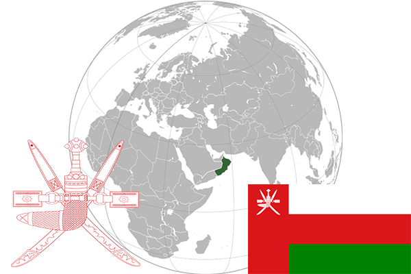

To`liq nomi: Ummon Sultonligi
Region: Janubiy Sharqiy Osiyo
Qonunchilik shakli: Sulton boshchiligidagi Monarxiya
Mustaqillik kuni: -
Poytaxt: Maskat
Maydoni: 212,460 km²
Chegaradosh davlatlari: BAA, Saudiya Arabistoni, Yaman
Aholisi: 4,424,762 (2016-yil)
Aholi zichligi: 15/km2
Aholining o`rtacha yoshi: 77,33 yil (2015-yil)
Rasmiy tili: Arab tili
Dini: Islom
Pul birligi: Rial Omani
Telefon prefiksi: +968
Internet domen: .om
Xalqaro tashkilotlarga a`zoligi: BMT (1971-yil)
Dengiz va okeanlarga chiqishi: Fors ko’rfazi
YIM: Butun: $71.3 mlrd.(2017-yil) Jon boshiga:$17,48
Yirik shaharlari: Maskat, Salalah, Bavshar